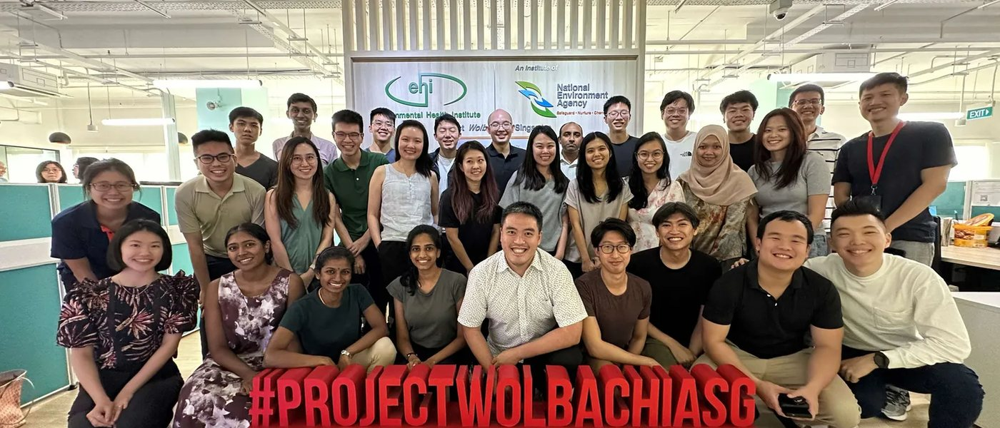

The jobs at the end of the five years.
Two exit pathways, and the posts they lead to across government, the statutory boards, the healthcare clusters and academia.

The photograph shows a statutory board team at work; the people in it are not identified, and it is not claimed that any of them trained on this programme.
Where this leads
Posts preventive medicine physicians hold in Singapore, as they appear on an organisation chart.
- Director, Communicable Diseases DivisionMinistry of Health
- Deputy Director, Health Regulation and LicensingMinistry of Health
- Head, Adult Health ProgrammesHealth Promotion Board
- Head, Screening and Immunisation ProgrammesHealth Promotion Board
- Senior Consultant, Occupational Safety and Health DivisionMinistry of Manpower
- Senior Medical Officer, Home Team Medical ServicesMinistry of Home Affairs
- Head, Preventive Medicine BranchSingapore Armed Forces
- Director, Population HealthNational Healthcare Group
- Head, Regional Health System PlanningSingHealth
- Director, Infection Prevention and ControlNational University Health System
- Assistant Professor, Saw Swee Hock School of Public HealthNational University of Singapore
- Technical Officer, Health EmergenciesWorld Health Organization Regional Office for the Western Pacific
Indicative posts, not a vacancy list and not a promise of placement. Titles are given to show the level and the kind of remit a preventive medicine physician carries, and are drawn only from the organisations that participate in the programme, plus academia and the regional office of the World Health Organization.
Who employs preventive medicine physicians
Six settings, and the work each of them involves.
- Government ministries
- Ministry of Health, Ministry of Manpower, Ministry of Home Affairs and the Singapore Armed Forces. You write the rule rather than apply it: disease control policy, permissible workplace exposure standards, health financing, and the legislation and licensing conditions that carry them.
- Statutory boards
- Principally the Health Promotion Board. Designing and running national programmes — screening, immunisation, nutrition labelling, behavioural intervention — and then measuring honestly whether they moved anything.
- Healthcare clusters
- National Healthcare Group, SingHealth and the National University Health System. Population health at cluster scale: infection prevention and control, care integration across the region a cluster is accountable for, and the data infrastructure underneath both.
- Academia
- The NUS Saw Swee Hock School of Public Health and its research groups. Teaching and research appointments, usually held jointly with a service post rather than instead of one.
- International organisations
- The World Health Organization Regional Office for the Western Pacific and comparable bodies. Technical posts on outbreak response, health systems and regional standards; commonly taken mid-career, often on secondment rather than as a permanent move.
- Private sector and industry
- Large employers, insurers and multinationals with a Singapore workforce. Occupational health across a whole population of workers: exposure assessment, fitness-to-work determinations, surveillance and workplace health programmes.
Descriptions of the work in each setting, written by the Programme Office. The eight participating organisations are as published by NUHS. Secondment to an international organisation is normally taken after accreditation rather than during training.